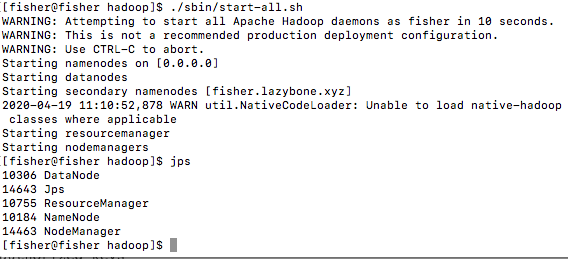
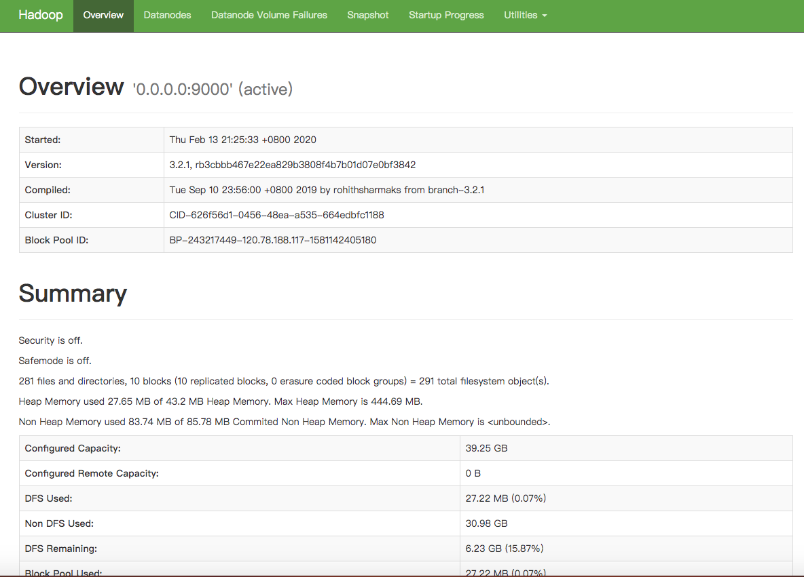

前言
因学校团委项目需要，我们团队需要一个统一的大数据文件储存节点。自己的电脑不能保证24h开机状态，因此我们打算在阿里云服务器上搭建HDFS节点，并以单节点模式运行
搭建过程
下载
首先下载Hadoop，这里使用了清华的镜像站
1
| wget https://mirrors.tuna.tsinghua.edu.cn/apache/hadoop/common/stable2/hadoop-3.2.1.tar.gz
|
然后下载Java JDK或Open JDK，由于Oracle官方的JDK下载需要Oracle账号，这里提供放在自己服务器上的资源
1
| wget http://fisher.lazybone.xyz/downloads/software/jdk-8u231-linux-x64.tar.gz
|
解压
因为组员可能要在本地搭建HDFS节点，因此我将JDK集成和数据文件夹放在Hadoop文件夹下，整个Hadoop文件夹目录结构如下：
1
2
3
4
5
| tar -zxvf hadoop-3.2.1.tar.gz
mv hadoop-3.2.1.tar.gz hadoop
tar -zxvf jdk-8u231-linux-x64.tar.gz -C ./hadoop
cd hadoop/
mv jdk1.8.0_231 jdk
|
配置
接下来我们需要配置Hadoop的HDFS模块，一共包括core-site.xml，hdfs-site.xml和hadoop-env.sh，这三个文件都在Hadoop文件夹的etc/hadoop/中
1
2
3
4
5
6
| cd etc/hadoop
vim core-site.xml
vim hdfs-site.xml
vim hadoop-env.sh
vim yarn-site.xml
vim mapred-site.xml
|
对于core-site.xml，我的配置如下：
1
2
3
4
5
6
7
8
9
10
11
12
13
14
15
16
17
18
19
20
21
22
| <configuration>
<property>
<name>fs.defaultFS</name>
<value>hdfs://0.0.0.0:9000</value>
<description>NameNode URL</description>
</property>
<property>
<name>hadoop.tmp.dir</name>
<value>/home/fisher/hadoop/data/temp</value>
<description>hadoop的临时本地文件目录</description>
</property>
<property>
<name>io.file.buffer.size</name>
<value>51200</value>
<description>读写序列文件缓存大小</description>
</property>
<property>
<name>dfs.namenode.datanode.registration.ip-hostname-check</name>
<value>false</value>
<description>关闭namenode与datanode之间交互的域名查询</description>
</property>
</configuration>
|
对于hdfs-site.xml，我的配置如下：
1
2
3
4
5
6
7
8
9
10
11
12
13
14
15
16
17
18
19
20
21
22
23
24
25
26
27
28
29
30
31
32
33
34
35
36
37
38
39
40
41
42
43
44
45
46
47
| <configuration>
<property>
<name>dfs.namenode.name.dir</name>
<value>/home/fisher/hadoop/data/name</value>
<description>本地文件系统存储着命令空间和操作日志 </description>
</property>
<property>
<name>dfs.datanode.data.dir</name>
<value>/home/fisher/hadoop/data/file</value>
<description>存储blocks的本地路径列表，用逗号隔开 </description>
</property>
<property>
<name>dfs.replication</name>
<value>1</value>
<description> 备份数，根据集群节点合理规划</description>
</property>
<property>
<name>dfs.webhdfs.enabled</name>
<value>true</value>
<description>是否使用界面访问</description>
</property>
<property>
<name>dfs.http.address</name>
<value>http://0.0.0.0:9001</value>
<description>namenode 界面访问地址</description>
</property>
<property>
<name>dfs.namenode.scondary.http-address</name>
<value>http://0.0.0.0:9003</value>
</property>
<property>
<name>dfs.namenode.scondary.http.address</name>
<value>http://localhost:9004</value>
</property>
<property>
<name>dfs.datanode.address</name>
<value>0.0.0.0:9006</value>
</property>
<property>
<name>dfs.datanode.http.address</name>
<value>http://0.0.0.0:9007</value>
</property>
<property>
<name>dfs.datanode.ipc.address</name>
<value>0.0.0.0:9008</value>
</property>
</configuration>
|
对于hadoop-env.sh，我们需要将JDK添加到其环境变量中，找到JAVA_HOME所在地方，将其修改：
1
| export JAVA_HOME=/home/fisher/hadoop/jdk
|
对于yarn-site.xml，我的配置如下：
1
2
3
4
5
6
| <configuration>
<property>
<name>yarn.nodemanager.aux-services</name>
<value>mapreduce_shuffle</value>
</property>
</configuration>
|
对于mapred-site.xml，我的配置如下：
1
2
3
4
5
6
| <configuration>
<property>
<name>mapreduce.framework.name</name>
<value>yarn</value>
</property>
</configuration>
|
至此，Hadoop的HDFS节点就搭建完成了。需要注意的是：如果我们需要将HDFS暴露到外网中，我们需要将节点的地址都修改为0.0.0.0，并且开放相应的防火墙端口
配置免登录密钥
我们还需要为当前用户配置.shh免登录
1
2
3
| ssh-keygen -t rsa -P '' -f ~/.ssh/id_rsa
cat ~/.ssh/id_rsa.pub >> ~/.ssh/authorized_keys
chmod 0600 ~/.ssh/authorized_keys
|
阿里云服务器的特别配置
如果需要在阿里云服务器上配置HDFS，则需要进行以下的配置，否则会导致Hadoop在连接Datanode的时候使用的是主机hostname+端口的情况，这将导致外网无法访问Datanode，从而导致无法上传或下载文件
首先，我们需要将主机名修改为主机的域名。这样子做有2个好处：
- Hadoop在连接Datanode的时候直接使用域名，不需要专门配置云服务器的Host文件
- 客户机在下载文件的时候直接使用域名进行连接，需要专门配置客户机上的Host文件
在root权限下编辑/etc/hostname和etc/hosts，其中yourdomain为你自己服务器的域名，yourip为你的服务器公网IP地址：
1
2
3
4
|
yourdomain
yourip yourdomain
|
启动
在Hadoop文件夹中初始化节点并启动
1
2
| bin/hdfs namenode -format
sbin/start-dfs.sh
|
启动结果如下图所示，则表示启动成功：

使用域名+端口访问网页管理界面，可以看到如下图所示状态，表明HDFS启动成功，接下来就可以使用网页端或者Java的HDFS包去连接服务器了
